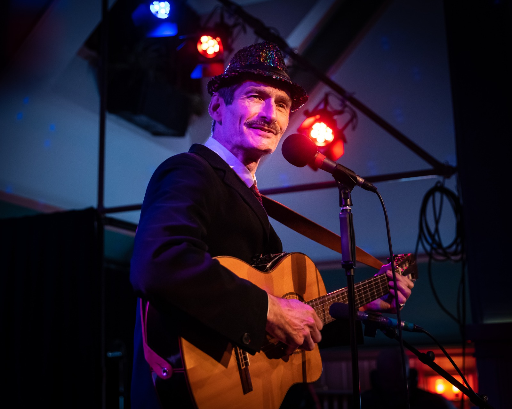

ChristopheChaplet
Un tour de chansons
Songs from the 19th till the 21st century in all forms and sizes.
All kinds of songs and memories for the future…
He performed in the cellars and cultural centres in and around Paris, the Concertgebouw in Amsterdam, Vredenburg Utrecht, the French Embassy, Maison Descartes and for Alliance Française throughout The Netherlands and Portugal.
“For a moment it felt as if we were all sitting in a cocoon, far from the raging world, listening to sweet songs of long ago.”
Rob Schouten, Trouw · 2018translated from DutchChristopheChaplet
Un tour de chansons
Songs from the 19th till the 21st century in all forms and sizes.
All kinds of songs and memories for the future…
He performed in the cellars and cultural centres in and around Paris, the Concertgebouw in Amsterdam, Vredenburg Utrecht, the French Embassy, Maison Descartes and for Alliance Française throughout The Netherlands and Portugal.
“For a moment it felt as if we were all sitting in a cocoon, far from the raging world, listening to sweet songs of long ago.”
Rob Schouten, Trouw · 2018translated from Dutch